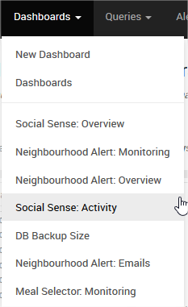

Hi,
I’ve just upgraded to v1.0 & first of all it’s working great, so keep up the good work!
We keep our dashboards grouped together using categories, e.g:
Social Sense: Activity
Social Sense: Overview
So you’d then get them grouped together as:
Social Sense
Activity
Overview
With v1.0 dashboards now get displayed without this grouping in the dropdown:

You can still get to the grouped view by goind Dashboards > Dashboards and then selecting the category, which is good, but it’d be better if we could still have them grouped in the main menu.
Cheers,
Josh
The dashboards drop down in v1 is showing the list of recent dashboards (instead of all dashboards), and therefore no longer groups them (as it adds unnecessary step in the menu).
Is there any option to switch it back to showing all dashboards (grouped)?
Perhaps I’m just not used to it yet, or we just use too many dashboards, but it feels disorganised when compared with how they were previously and I find myself constantly having to go via the dashboards page to find what I need.
Cheers,
Josh
Hello,
Big +1 on this request ! Would be super nice to be able to choose between grouping them or having the most recent.
I totally understand that for some users it can be super useful to have the most recent ones, but at Drivy we spent quite a lot of time organising all our dashboards in structured folders per department / main topics, and rank them (with numbers) so we can easily guide all the employees toward the most relevant dashboards for them. Works super well for us, and we would be super happy if this feature was back (in fact we were even hoping to be able to have subfolders)
If not possible to group them, something like “featured” dashboards rather than recent ones could work for us as well.
Cheers,
Guillemette
 (in fact we were even hoping to be able to have subfolders)
(in fact we were even hoping to be able to have subfolders)